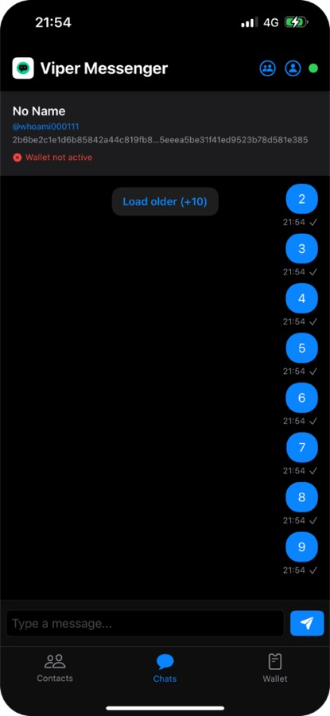
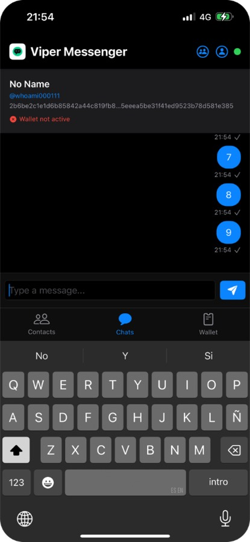
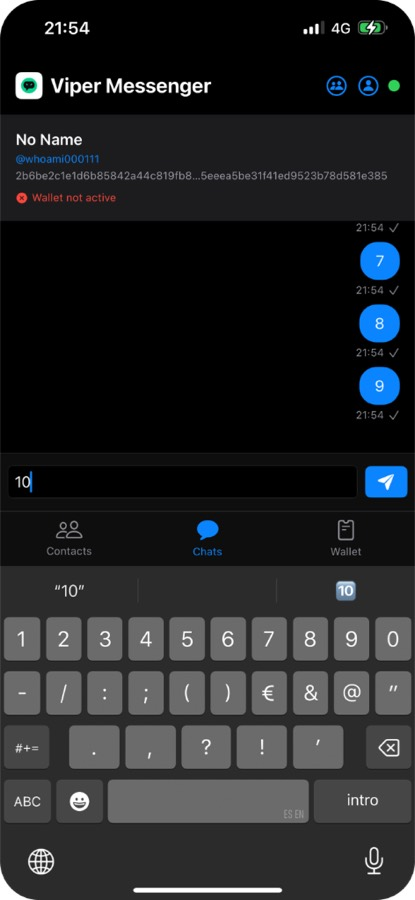
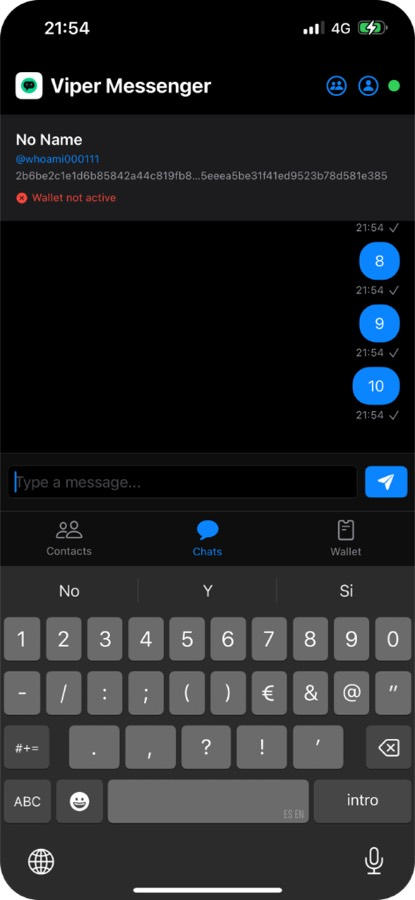
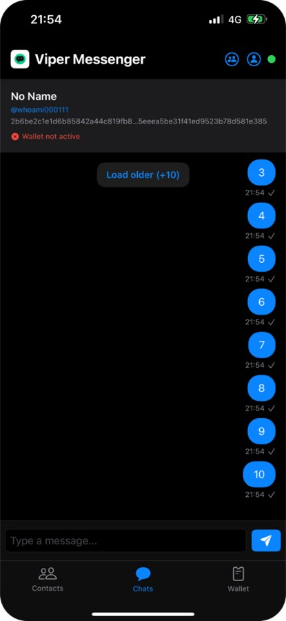
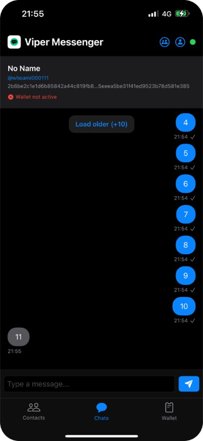

Chat UI in Viper: keyboard and messages
Chat looks simple.
A message list, an input field, a send button — it feels like a solved problem.
In practice, chat UI quickly hits the limits of standard components. Especially when you need to support at the same time:
- loading older messages from the top,
- correct keyboard handling,
- sending and receiving messages without jumps,
- staying inside SwiftUI.
In Viper, chat is implemented as a custom ScrollView built on SwiftUI + UIKit. During development, several typical but non-obvious problems appeared. These are rarely described end to end, but show up immediately in real apps.
Architecture in short
At the core there is UIScrollView wrapped in UIViewRepresentable.
Key components:
- NotifyingScrollView — UIScrollView that reports layout changes
- ChatScrollView — SwiftUI wrapper that controls scrolling via bindings
- Coordinator — central place for scrolling logic, prepend, restore, and keyboard
This approach allows:
- keeping control over scroll geometry,
- synchronizing UIKit and SwiftUI,
- avoiding unstable behavior of standard ScrollView.
Part 1. Keyboard show and hide

The chat interface with the keyboard hidden, showing messages 7, 8, and 9 in the viewport.

When the keyboard appears, the same messages remain visible. The content shifts up smoothly without losing scroll position.
The most common scenario is reading messages and starting to type.
Expected behavior is simple:
- keyboard appears,
- content moves together with it,
- current position is preserved,
- no jumps or layout rebuilds.
What usually breaks
With a standard SwiftUI + ScrollView setup:
- safe area changes cause a contentInset jump,
- UIKit automatically adjusts contentOffset,
- position drifts when keyboard shows and hides,
- the effect is stronger when the user is not at the bottom.
Formally everything works. Visually scrolling becomes unstable.
How it is handled in code
In ChatScrollView the keyboard is treated as a layout event. Not as a UI state change.
Several techniques are used:
- NotifyingScrollView reports layoutSubviews to track real size changes
- temporary switching of contentInsetAdjustmentBehavior (.never → .automatic → .never) forces UIKit to recalculate layout without manual offset correction
- all scroll changes go through Coordinator instead of SwiftUI directly
As a result:
- content moves in sync with the keyboard,
- position is not auto-corrected by the system,
- visual context is preserved.
Part 2. Outgoing message

User types "10" in the input field while viewing messages 7, 8, 9.

After sending, message "10" appears at the bottom. The scroll position adjusts smoothly to show the new message without jarring jumps.
Sending a message is another scenario where jumps appear easily.
At the moment of sending:
- a new item is added to the data source,
- contentHeight changes,
- SwiftUI triggers a view update,
- keyboard stays active.
Calling auto scroll directly almost always causes a jump.
How it works
There is no direct scrollToBottom in ChatScrollView.
Instead:
- current position and content height are tracked via bindings (contentOffset, contentHeight)
- Coordinator decides whether the position should change
- if the user is at the bottom, scrolling follows smoothly
- if the user is higher, the offset stays unchanged
Outgoing messages do not interfere with reading history.
Part 3. Keyboard hide

After sending message "10", the keyboard stays open. User manually taps outside the input field to dismiss it. When the keyboard hides, message "10" moves down smoothly as the content expands. Messages 3-10 are now visible, with "Load older (+10)" button at the top. The transition is stable with no content jumps.
Keyboard hide looks like a reverse operation. In practice, it is where many micro issues appear.
In SwiftUI, keyboard dismissal often causes layout jumps.
Typical symptoms:
- small offset bounce,
- bottom gap,
- brief layout reconstruction.
The reason is UIKit automatic adjustments.
What is done in Viper
- automatic inset adjustments are disabled
- position restore goes through Coordinator
- two-pass restore is used to account for height changes
- scrolling may be temporarily locked (isScrollEnabled = false) to remove micro jitter
As a result, keyboard hide looks as stable as keyboard show.
Part 4. Incoming message

A new incoming message "11" appears at the bottom with a darker bubble (left-aligned), showing it's from another user. The scroll position automatically adjusts to show the new message.
Incoming messages are also non-trivial because they can arrive:
- at any moment,
- while typing,
- while reading history,
- with keyboard shown or hidden.
Base rule
An incoming message must not change the current position if the user:
- is not at the bottom,
- or is actively interacting with the chat.
Implementation
- content change triggers relayout without offset change
- Coordinator tracks the user position
- auto scroll happens only when the user is already at the bottom
Incoming messages do not break the current context.
Summary
Chat implementation is not just a message list. It is constant coordination between:
- UIKit and SwiftUI,
- layout and state,
- user actions and async events.
Keyboard, prepend, append, restore — all of them intersect inside one ScrollView and require explicit control.
That is why Viper uses a custom implementation instead of the standard ScrollView.
First published December 27, 2025 on the old Viper Foundation blog; moved here November 19, 2026. All posts